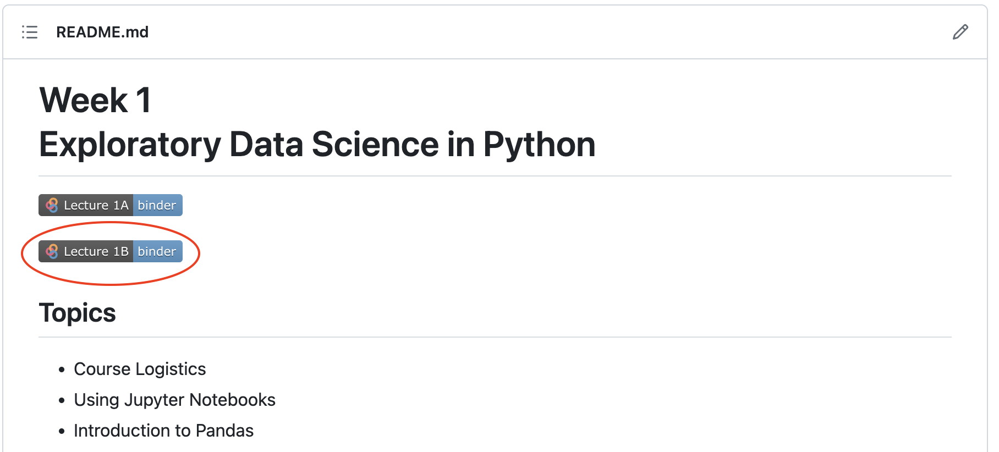
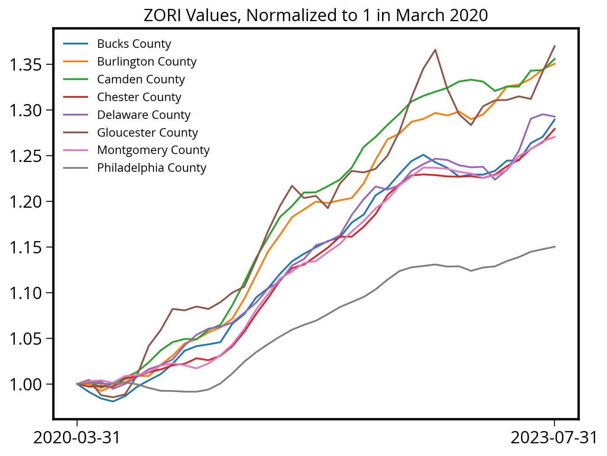
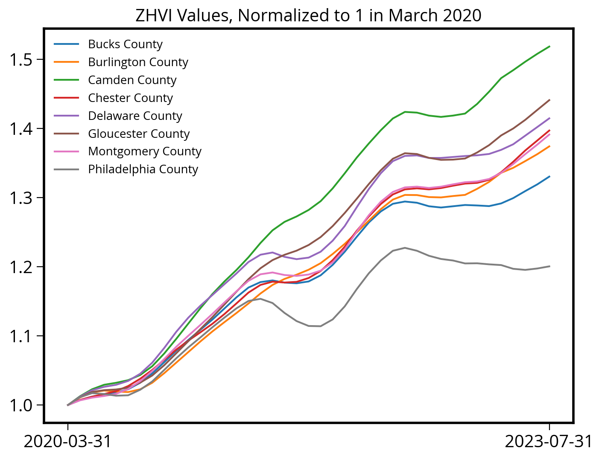

import pandas as pdWeek 1B: Exploratory Data Science in Python
- Section 401
- 9/6/2023
Today
- Introduction to Pandas
- Key data analysis concepts
- Example: Census + Zillow data
Reminder: The weekly workflow
- You’ll set up your local Python environment as part of the first homework assignment
- Each week, you will have two options to follow along with lectures:
- Using Binder in the cloud, launching via the button on the week’s repository
- Download the week’s repository to your laptop and launch the notebook locally
- Work on homeworks locally on your laptop — Binder is only a temporary environment (no save features)
To follow along today, go to https://github.com/MUSA-550-Fall-2023/week-1

Reminder: Free DataCamp Courses
DataCamp is providing 6 months of complimentary access to its courses for students in MUSA 550. Whether you have experience with Python or not, this is a great opportunity to learn the basics of Python and practice your skills.
It is strongly recommended that you watch some or all of the introductory videos below to build a stronger Python foundation for the semester. The more advanced, intermediate courses are also great — the more the merrier!
For more info, including how to sign up, check out the resources section of the website.
Python Data Analysis: the pandas package
Documentation is available at https://pandas.pydata.org
The old logo
The new, less fun logo

The following line imports the pandas package:
Basic pandas concepts
The primary objects in pandas are the:
DataFrame, which is very similar to an Excel spreadsheet, and has rows and named columnsSeries, which represents a single column of data. ADataFramecontains one or moreSeriesand a name for eachSeries.
The data frame is a commonly used abstraction for data manipulation. Similar implementations exist in R.
You can think Series objects as fancier versions of Python’s built-in list data type.
To create a Series object, pass a list of values to the pd.Series() function:
## Philadelphia metro counties and populations
county_names = pd.Series(
[
"Bucks",
"Chester",
"Delaware",
"Montgomery",
"Philadelphia",
"Burlington",
"Camden",
"Gloucester",
]
)
population = pd.Series(
[
645054.0,
545823.0,
575182.0,
864683.0,
1567258.0,
466103.0,
524907.0,
306601.0,
]
)DataFrame objects can be created by passing a dict mapping string column names to their respective Series.
county_df = pd.DataFrame({"County Name": county_names, "Population": population})
county_df| County Name | Population | |
|---|---|---|
| 0 | Bucks | 645054.0 |
| 1 | Chester | 545823.0 |
| 2 | Delaware | 575182.0 |
| 3 | Montgomery | 864683.0 |
| 4 | Philadelphia | 1567258.0 |
| 5 | Burlington | 466103.0 |
| 6 | Camden | 524907.0 |
| 7 | Gloucester | 306601.0 |
Note
Always try to give your variables meaningful names. It will help immensely when you are trying to debug problems or when you’re trying to understand the code you’ve written months later.
1. Accessing data
# Access columns with a dict-like syntax
county_df["Population"]0 645054.0
1 545823.0
2 575182.0
3 864683.0
4 1567258.0
5 466103.0
6 524907.0
7 306601.0
Name: Population, dtype: float64Rows can be accessed using Python’s syntax for slicing:
## Example: slicing a list slicing
# Get the elements with indices 1 and 2 (but NOT 3)
county_list = ["Bucks", "Philadelphia", "Delaware"]
county_list[0:2] # Same as county_list[:2] (omitting the zero)['Bucks', 'Philadelphia']Unfortunately the functionality for slicing lists is not that powerful…but pandas will have many more features!
# Slicing a DataFrame is similar...but now we will get rows of the DataFrame back!
county_df[0:2]| County Name | Population | |
|---|---|---|
| 0 | Bucks | 645054.0 |
| 1 | Chester | 545823.0 |
pandas includes functionality for many different ways of selecting data. See the documentation for many more examples.
2. Manipulating data
county_df["Population"].median()560502.5county_df["Population"].mean()686951.375NumPy (Numerical Python) is a popular toolkit for scientific computing. Among other things, it can calculate mathematical functions, like mean, median, min, max, etc.
pandas Series can be used as arguments to most NumPy functions:
import numpy as np# Calculate the median population value
np.median(county_df["Population"])560502.5# Calculate the median population value
np.mean(county_df["Population"])686951.375
Note: DataCamp + NumPy
We won’t go through the specifics of NumPy in detail in this course. You will see it pop up throughout the course, particularly when we start talking about two-dimensional raster image data. NumPy specializes in multi-dimensional arrays, the same format of multi-band raster data.
In the meantime, if you want to know more about NumPy or just build your Python knowledge, check out the DataCamp course on NumPy. To get free access to DataCamp, see the instructions on the course website.
3. Applying a function
For more complex single-column transformations, you can use Series.apply. It accepts a function that is applied to each value in the Series.
An apply operation allows you to call an arbitrary function to each value in a column. It is a core pandas concept and can be very powerful for complex calculations.
As an example, we can find which counties have a population greater than one million:
# Define our function
def get_large_counties(population):
return population > 1e6
large_county_sel = county_df["Population"].apply(get_large_counties)# This is a Series where the value is the returned value from the above function
large_county_sel0 False
1 False
2 False
3 False
4 True
5 False
6 False
7 False
Name: Population, dtype: bool# Add the new computed column to our original data frame
county_df["Large Counties"] = large_county_sel
county_df| County Name | Population | Large Counties | |
|---|---|---|---|
| 0 | Bucks | 645054.0 | False |
| 1 | Chester | 545823.0 | False |
| 2 | Delaware | 575182.0 | False |
| 3 | Montgomery | 864683.0 | False |
| 4 | Philadelphia | 1567258.0 | True |
| 5 | Burlington | 466103.0 | False |
| 6 | Camden | 524907.0 | False |
| 7 | Gloucester | 306601.0 | False |
We could have also used a Python lambda function for our function. These are inline functions that start with a special Python keyword lambda, followed by the function argument, a colon, and then the contents of the function.
Tip
See this DataCamp tutorial for more info on lambda functions.
As an example, let’s add a small counties column using a lambda function. The lambda function below is equivalent to the more verbose traditional definition:
# Equivalent to -> lambda population: population < 1e6
def small_counties_func(population):
return population < 1e6small_counties_func = lambda population: population < 1e6
# we can also use lambda (unnamed, inline) functions
county_df["Small Counties"] = county_df["Population"].apply(small_counties_func)
# Print out
county_df| County Name | Population | Large Counties | Small Counties | |
|---|---|---|---|---|
| 0 | Bucks | 645054.0 | False | True |
| 1 | Chester | 545823.0 | False | True |
| 2 | Delaware | 575182.0 | False | True |
| 3 | Montgomery | 864683.0 | False | True |
| 4 | Philadelphia | 1567258.0 | True | False |
| 5 | Burlington | 466103.0 | False | True |
| 6 | Camden | 524907.0 | False | True |
| 7 | Gloucester | 306601.0 | False | True |
4. Data selection
We can select the “large” counties by passing the boolean values to the .loc[] function of a DataFrame:
county_df["Large Counties"]0 False
1 False
2 False
3 False
4 True
5 False
6 False
7 False
Name: Large Counties, dtype: boolcounty_df.loc[ county_df["Large Counties"] ]| County Name | Population | Large Counties | Small Counties | |
|---|---|---|---|---|
| 4 | Philadelphia | 1567258.0 | True | False |
Note
Be sure to use square brackets when calling .loc.
.loc[] ✓
.loc() ✘
But: there is a faster, more concise, to achieve this!
county_df["Population"] > 1e60 False
1 False
2 False
3 False
4 True
5 False
6 False
7 False
Name: Population, dtype: bool# We can pass the selection directory the .loc[] —> no need to define a new variable
county_df.loc[ county_df["Population"] > 1e6 ] | County Name | Population | Large Counties | Small Counties | |
|---|---|---|---|---|
| 4 | Philadelphia | 1567258.0 | True | False |
Question: What about getting rows where “Large Counties” is False?
Answer: Use the Python tilde operator to do a logicial not operation:
# Reverse the large counties boolean selection
county_df.loc[ ~large_county_sel ]| County Name | Population | Large Counties | Small Counties | |
|---|---|---|---|---|
| 0 | Bucks | 645054.0 | False | True |
| 1 | Chester | 545823.0 | False | True |
| 2 | Delaware | 575182.0 | False | True |
| 3 | Montgomery | 864683.0 | False | True |
| 5 | Burlington | 466103.0 | False | True |
| 6 | Camden | 524907.0 | False | True |
| 7 | Gloucester | 306601.0 | False | True |
# or equivalently:
# NOTE: you need to put the whole expression in () and then apply the tilde!
county_df.loc[ ~(county_df["Population"] > 1e6) ]| County Name | Population | Large Counties | Small Counties | |
|---|---|---|---|---|
| 0 | Bucks | 645054.0 | False | True |
| 1 | Chester | 545823.0 | False | True |
| 2 | Delaware | 575182.0 | False | True |
| 3 | Montgomery | 864683.0 | False | True |
| 5 | Burlington | 466103.0 | False | True |
| 6 | Camden | 524907.0 | False | True |
| 7 | Gloucester | 306601.0 | False | True |
Ah! An even faster way!
We can use the pandas query function.
The query() function will return a subset of your dataframe based on a string version of the boolean expression.
county_df.query("Population < 1e6")| County Name | Population | Large Counties | Small Counties | |
|---|---|---|---|---|
| 0 | Bucks | 645054.0 | False | True |
| 1 | Chester | 545823.0 | False | True |
| 2 | Delaware | 575182.0 | False | True |
| 3 | Montgomery | 864683.0 | False | True |
| 5 | Burlington | 466103.0 | False | True |
| 6 | Camden | 524907.0 | False | True |
| 7 | Gloucester | 306601.0 | False | True |
What else can .loc[] do? So much!
One of the more common uses is use the DataFrame’s index labels to select particular rows. What is the index?
Each row has a label that idenitifes it. By default the label is an integer ranging from 0 (first row) to 1 less than the number of rows (last row). The label is displayed in bold before each row when you look at a DataFrame:
county_df| County Name | Population | Large Counties | Small Counties | |
|---|---|---|---|---|
| 0 | Bucks | 645054.0 | False | True |
| 1 | Chester | 545823.0 | False | True |
| 2 | Delaware | 575182.0 | False | True |
| 3 | Montgomery | 864683.0 | False | True |
| 4 | Philadelphia | 1567258.0 | True | False |
| 5 | Burlington | 466103.0 | False | True |
| 6 | Camden | 524907.0 | False | True |
| 7 | Gloucester | 306601.0 | False | True |
We can pass a label to the .loc[] function to select a particular row. For example, to get the Philadelphia row, we could use the “4” label:
county_df.loc[4]County Name Philadelphia
Population 1567258.0
Large Counties True
Small Counties False
Name: 4, dtype: objectOr maybe we want the suburb counties in NJ. In this case, we can pass a list of multiple labels (5, 6, 7)”
nj_suburbs = county_df.loc[ [5, 6, 7] ]
nj_suburbs| County Name | Population | Large Counties | Small Counties | |
|---|---|---|---|---|
| 5 | Burlington | 466103.0 | False | True |
| 6 | Camden | 524907.0 | False | True |
| 7 | Gloucester | 306601.0 | False | True |
::: {.callout-important}
Note that this is different than the .iloc[] function, which can also be used to select rows from a DataFrame. However, it uses the integer value of the row, regardless of what the labels in the index are. For example, the first row of a dataframe can always be accessed using:
df.iloc[0]
For more details on the .iloc[] function, see the documentation on indexing by position.
In the case of the nj_suburbs dataframe, we can get the first row, which has a label of “5”, using:
nj_suburbs.iloc[0]County Name Burlington
Population 466103.0
Large Counties False
Small Counties True
Name: 5, dtype: objectWe can also reset the index labels so they range from 0 to the length of the dataframe, using the reset_index() function. For example
nj_suburbs_reset = nj_suburbs.reset_index(drop=True)
nj_suburbs_reset| County Name | Population | Large Counties | Small Counties | |
|---|---|---|---|---|
| 0 | Burlington | 466103.0 | False | True |
| 1 | Camden | 524907.0 | False | True |
| 2 | Gloucester | 306601.0 | False | True |
Need more help?
How to remember the specifics of all of these functions?
The documentation is your best friend: The Pandas user guide
You can also use the question mark operator in the notebook!
# Use the question mark
pd.DataFrame.loc?Type: property String form: <property object at 0x13712c360> Docstring: Access a group of rows and columns by label(s) or a boolean array. ``.loc[]`` is primarily label based, but may also be used with a boolean array. Allowed inputs are: - A single label, e.g. ``5`` or ``'a'``, (note that ``5`` is interpreted as a *label* of the index, and **never** as an integer position along the index). - A list or array of labels, e.g. ``['a', 'b', 'c']``. - A slice object with labels, e.g. ``'a':'f'``. .. warning:: Note that contrary to usual python slices, **both** the start and the stop are included - A boolean array of the same length as the axis being sliced, e.g. ``[True, False, True]``. - An alignable boolean Series. The index of the key will be aligned before masking. - An alignable Index. The Index of the returned selection will be the input. - A ``callable`` function with one argument (the calling Series or DataFrame) and that returns valid output for indexing (one of the above) See more at :ref:`Selection by Label <indexing.label>`. Raises ------ KeyError If any items are not found. IndexingError If an indexed key is passed and its index is unalignable to the frame index. See Also -------- DataFrame.at : Access a single value for a row/column label pair. DataFrame.iloc : Access group of rows and columns by integer position(s). DataFrame.xs : Returns a cross-section (row(s) or column(s)) from the Series/DataFrame. Series.loc : Access group of values using labels. Examples -------- **Getting values** >>> df = pd.DataFrame([[1, 2], [4, 5], [7, 8]], ... index=['cobra', 'viper', 'sidewinder'], ... columns=['max_speed', 'shield']) >>> df max_speed shield cobra 1 2 viper 4 5 sidewinder 7 8 Single label. Note this returns the row as a Series. >>> df.loc['viper'] max_speed 4 shield 5 Name: viper, dtype: int64 List of labels. Note using ``[[]]`` returns a DataFrame. >>> df.loc[['viper', 'sidewinder']] max_speed shield viper 4 5 sidewinder 7 8 Single label for row and column >>> df.loc['cobra', 'shield'] 2 Slice with labels for row and single label for column. As mentioned above, note that both the start and stop of the slice are included. >>> df.loc['cobra':'viper', 'max_speed'] cobra 1 viper 4 Name: max_speed, dtype: int64 Boolean list with the same length as the row axis >>> df.loc[[False, False, True]] max_speed shield sidewinder 7 8 Alignable boolean Series: >>> df.loc[pd.Series([False, True, False], ... index=['viper', 'sidewinder', 'cobra'])] max_speed shield sidewinder 7 8 Index (same behavior as ``df.reindex``) >>> df.loc[pd.Index(["cobra", "viper"], name="foo")] max_speed shield foo cobra 1 2 viper 4 5 Conditional that returns a boolean Series >>> df.loc[df['shield'] > 6] max_speed shield sidewinder 7 8 Conditional that returns a boolean Series with column labels specified >>> df.loc[df['shield'] > 6, ['max_speed']] max_speed sidewinder 7 Callable that returns a boolean Series >>> df.loc[lambda df: df['shield'] == 8] max_speed shield sidewinder 7 8 **Setting values** Set value for all items matching the list of labels >>> df.loc[['viper', 'sidewinder'], ['shield']] = 50 >>> df max_speed shield cobra 1 2 viper 4 50 sidewinder 7 50 Set value for an entire row >>> df.loc['cobra'] = 10 >>> df max_speed shield cobra 10 10 viper 4 50 sidewinder 7 50 Set value for an entire column >>> df.loc[:, 'max_speed'] = 30 >>> df max_speed shield cobra 30 10 viper 30 50 sidewinder 30 50 Set value for rows matching callable condition >>> df.loc[df['shield'] > 35] = 0 >>> df max_speed shield cobra 30 10 viper 0 0 sidewinder 0 0 **Getting values on a DataFrame with an index that has integer labels** Another example using integers for the index >>> df = pd.DataFrame([[1, 2], [4, 5], [7, 8]], ... index=[7, 8, 9], columns=['max_speed', 'shield']) >>> df max_speed shield 7 1 2 8 4 5 9 7 8 Slice with integer labels for rows. As mentioned above, note that both the start and stop of the slice are included. >>> df.loc[7:9] max_speed shield 7 1 2 8 4 5 9 7 8 **Getting values with a MultiIndex** A number of examples using a DataFrame with a MultiIndex >>> tuples = [ ... ('cobra', 'mark i'), ('cobra', 'mark ii'), ... ('sidewinder', 'mark i'), ('sidewinder', 'mark ii'), ... ('viper', 'mark ii'), ('viper', 'mark iii') ... ] >>> index = pd.MultiIndex.from_tuples(tuples) >>> values = [[12, 2], [0, 4], [10, 20], ... [1, 4], [7, 1], [16, 36]] >>> df = pd.DataFrame(values, columns=['max_speed', 'shield'], index=index) >>> df max_speed shield cobra mark i 12 2 mark ii 0 4 sidewinder mark i 10 20 mark ii 1 4 viper mark ii 7 1 mark iii 16 36 Single label. Note this returns a DataFrame with a single index. >>> df.loc['cobra'] max_speed shield mark i 12 2 mark ii 0 4 Single index tuple. Note this returns a Series. >>> df.loc[('cobra', 'mark ii')] max_speed 0 shield 4 Name: (cobra, mark ii), dtype: int64 Single label for row and column. Similar to passing in a tuple, this returns a Series. >>> df.loc['cobra', 'mark i'] max_speed 12 shield 2 Name: (cobra, mark i), dtype: int64 Single tuple. Note using ``[[]]`` returns a DataFrame. >>> df.loc[[('cobra', 'mark ii')]] max_speed shield cobra mark ii 0 4 Single tuple for the index with a single label for the column >>> df.loc[('cobra', 'mark i'), 'shield'] 2 Slice from index tuple to single label >>> df.loc[('cobra', 'mark i'):'viper'] max_speed shield cobra mark i 12 2 mark ii 0 4 sidewinder mark i 10 20 mark ii 1 4 viper mark ii 7 1 mark iii 16 36 Slice from index tuple to index tuple >>> df.loc[('cobra', 'mark i'):('viper', 'mark ii')] max_speed shield cobra mark i 12 2 mark ii 0 4 sidewinder mark i 10 20 mark ii 1 4 viper mark ii 7 1 Please see the :ref:`user guide<advanced.advanced_hierarchical>` for more details and explanations of advanced indexing.
# Use the question mark
pd.DataFrame.iloc?Type: property String form: <property object at 0x136a307c0> Docstring: Purely integer-location based indexing for selection by position. ``.iloc[]`` is primarily integer position based (from ``0`` to ``length-1`` of the axis), but may also be used with a boolean array. Allowed inputs are: - An integer, e.g. ``5``. - A list or array of integers, e.g. ``[4, 3, 0]``. - A slice object with ints, e.g. ``1:7``. - A boolean array. - A ``callable`` function with one argument (the calling Series or DataFrame) and that returns valid output for indexing (one of the above). This is useful in method chains, when you don't have a reference to the calling object, but would like to base your selection on some value. - A tuple of row and column indexes. The tuple elements consist of one of the above inputs, e.g. ``(0, 1)``. ``.iloc`` will raise ``IndexError`` if a requested indexer is out-of-bounds, except *slice* indexers which allow out-of-bounds indexing (this conforms with python/numpy *slice* semantics). See more at :ref:`Selection by Position <indexing.integer>`. See Also -------- DataFrame.iat : Fast integer location scalar accessor. DataFrame.loc : Purely label-location based indexer for selection by label. Series.iloc : Purely integer-location based indexing for selection by position. Examples -------- >>> mydict = [{'a': 1, 'b': 2, 'c': 3, 'd': 4}, ... {'a': 100, 'b': 200, 'c': 300, 'd': 400}, ... {'a': 1000, 'b': 2000, 'c': 3000, 'd': 4000 }] >>> df = pd.DataFrame(mydict) >>> df a b c d 0 1 2 3 4 1 100 200 300 400 2 1000 2000 3000 4000 **Indexing just the rows** With a scalar integer. >>> type(df.iloc[0]) <class 'pandas.core.series.Series'> >>> df.iloc[0] a 1 b 2 c 3 d 4 Name: 0, dtype: int64 With a list of integers. >>> df.iloc[[0]] a b c d 0 1 2 3 4 >>> type(df.iloc[[0]]) <class 'pandas.core.frame.DataFrame'> >>> df.iloc[[0, 1]] a b c d 0 1 2 3 4 1 100 200 300 400 With a `slice` object. >>> df.iloc[:3] a b c d 0 1 2 3 4 1 100 200 300 400 2 1000 2000 3000 4000 With a boolean mask the same length as the index. >>> df.iloc[[True, False, True]] a b c d 0 1 2 3 4 2 1000 2000 3000 4000 With a callable, useful in method chains. The `x` passed to the ``lambda`` is the DataFrame being sliced. This selects the rows whose index label even. >>> df.iloc[lambda x: x.index % 2 == 0] a b c d 0 1 2 3 4 2 1000 2000 3000 4000 **Indexing both axes** You can mix the indexer types for the index and columns. Use ``:`` to select the entire axis. With scalar integers. >>> df.iloc[0, 1] 2 With lists of integers. >>> df.iloc[[0, 2], [1, 3]] b d 0 2 4 2 2000 4000 With `slice` objects. >>> df.iloc[1:3, 0:3] a b c 1 100 200 300 2 1000 2000 3000 With a boolean array whose length matches the columns. >>> df.iloc[:, [True, False, True, False]] a c 0 1 3 1 100 300 2 1000 3000 With a callable function that expects the Series or DataFrame. >>> df.iloc[:, lambda df: [0, 2]] a c 0 1 3 1 100 300 2 1000 3000
A more interesting example: The Donut Effect
The pandemic and growth in work from home led to a phenomenon known as the “Donut Effect”. With more flexible working options and pandemic-driven density fears, people left urban dense cores and opted for more space in city suburbs, driving home and rental prices up in the suburbs relative to city centers.
1. Population change
I’ve stored more data on population for Philadelphia and its suburbs in a comma-separated value (CSV) file in the data folder: data/phila-metro-counties-population.csv.
This data comes from the Census Population Estimates series for counties in the Philadelphia metropolitan region, which includes Philadelphia County, four suburb counties in PA, and 3 suburb counties in NJ. Later in the course, you’ll learn how to download data from the Census directly using Python, but for now, I’ve downloaded and formatted the data already.
Let’s use this data to see if the donut effect occurred in Philadelphia and its suburbs.
Goal: Calculate the percent population change from 2020 to 2022 in Philadelphia and the total percent change in the suburb counties and compare!
First, use the pd.read_csv() function from pandas. The first argument to pd.read_csv() is the file path to load.
# Load the data from the CSV file
pop_df = pd.read_csv("./data/phila-metro-counties-population.csv")# How many rows are in the dataframe? --> use the len() operator
len(pop_df)8Peak at the first 5 rows:
pop_df.head()| county_name | state_name | pop_2020 | pop_2022 | |
|---|---|---|---|---|
| 0 | Bucks | PA | 646112.0 | 645054.0 |
| 1 | Chester | PA | 534783.0 | 545823.0 |
| 2 | Delaware | PA | 576323.0 | 575182.0 |
| 3 | Montgomery | PA | 856938.0 | 864683.0 |
| 4 | Philadelphia | PA | 1600600.0 | 1567258.0 |
Exercise: Calculate the percent change in population for Philadelphia
Let’s select the data for Philadelphia to get its population change.
Steps:
- Select the data for Philadelphia
- Select the 2020 and 2022 population columns (see the tip below about the
squeeze()function) - Calculate the percent change
Tip: The squeeze() function
If we select the data for Philadelphia, it will be DataFrame with only a single row. So if we access a column, it will return a Series of length one, rather than just a number.
We can use the .squeeze() function to get rid of this extra dimension of length one. It does just one it sounds like: if you have a DataFrame with only one row, it will “squeeze” the row dimension by removing it, returning just a Series object:
The selector for Philadelphia:
pop_df["county_name"] == "Philadelphia"0 False
1 False
2 False
3 False
4 True
5 False
6 False
7 False
Name: county_name, dtype: boolNow, let’s use the .loc[] function to select the data for Philadelphia
philly_pop = pop_df.loc[ pop_df['county_name'] == 'Philadelphia' ]
philly_pop| county_name | state_name | pop_2020 | pop_2022 | |
|---|---|---|---|---|
| 4 | Philadelphia | PA | 1600600.0 | 1567258.0 |
philly_pop = pop_df.loc[pop_df["county_name"] == "Philadelphia"].squeeze()
philly_popcounty_name Philadelphia
state_name PA
pop_2020 1600600.0
pop_2022 1567258.0
Name: 4, dtype: objectNow we can calculate the percent change:
philly_pop_change = 100 * (philly_pop['pop_2022'] / philly_pop['pop_2020'] - 1)
philly_pop_change-2.0830938398100685A little more than 2% decline in population from 2020 to 2022!
A note about string formatting in Python
We can format this into a string using an “f-string”, strings that have an “f” before them.
Look for curly braces in these strings. The syntax is: {variable_name : format string}. For example:
print(f"Philadelphia's percent change in population from 2020 to 2022: {philly_pop_change:.1f}%")Philadelphia's percent change in population from 2020 to 2022: -2.1%In this case, we told Python to format the philly_pop_change as a floating point number with one decimal using .1f.
Tip
For more practice with f-strings, see this DataCamp tutorial.
Next up: let’s calculate the total population change across all the suburb counties. First select every county except for Philadelphia, using the != (not equals) operator.
# Now do the selection!
suburb_pop = pop_df.loc[ pop_df["county_name"] != 'Philadelphia' ] # select the valid rows
suburb_pop| county_name | state_name | pop_2020 | pop_2022 | |
|---|---|---|---|---|
| 0 | Bucks | PA | 646112.0 | 645054.0 |
| 1 | Chester | PA | 534783.0 | 545823.0 |
| 2 | Delaware | PA | 576323.0 | 575182.0 |
| 3 | Montgomery | PA | 856938.0 | 864683.0 |
| 5 | Burlington | NJ | 461648.0 | 466103.0 |
| 6 | Camden | NJ | 523074.0 | 524907.0 |
| 7 | Gloucester | NJ | 302554.0 | 306601.0 |
To calculate the total percent change, we can sum up the population in 2020 and 2022 and calculate the percent change.
In this case, we can use the built-in .sum() function for a column Series to sum up the values in a column:
suburb_pop["pop_2022"].sum()3928353.0suburb_pop_change = 100 * (suburb_pop["pop_2022"].sum() / suburb_pop["pop_2020"].sum() - 1)
suburb_pop_change0.6900286869026662print(f"Percent change in population from 2020 to 2022 in the Philadelphia suburbs: {suburb_pop_change:.1f}%")Percent change in population from 2020 to 2022 in the Philadelphia suburbs: 0.7%Takeaway
A slight 0.7% increase in population change in the suburb counties from 2020 to 2022, compared to a 2.1% decline in Philadelphia.
This tracks with the idea of a “donut effect” in Philadelphia during the pandemic!
2. Home & rental prices
Let’s investigate changes in home and rental prices in Philadelphia and its suburbs during the pandemic. If there was a strong “donut effect”, we would expect to see higher price appreciation in the suburbs compared to Philadelphia itself.
For this part, we will use Zillow data, specifically data by county for the Zillow Observed Rent Index (ZORI) and Zillow Home Value Index (ZHVI).
I’ve already downloaded the data and stored it in the data/ folder. Let’s read it into pandas using the pd.read_csv() function.
zhvi = pd.read_csv("data/County_zhvi_uc_sfrcondo_tier_0.33_0.67_sm_sa_month.csv")
zori = pd.read_csv("data/County_zori_sm_month.csv")Peek at the first few rows of the rent data:
zori.head()| RegionID | SizeRank | RegionName | RegionType | StateName | State | Metro | StateCodeFIPS | MunicipalCodeFIPS | 2015-01-31 | ... | 2022-10-31 | 2022-11-30 | 2022-12-31 | 2023-01-31 | 2023-02-28 | 2023-03-31 | 2023-04-30 | 2023-05-31 | 2023-06-30 | 2023-07-31 | |
|---|---|---|---|---|---|---|---|---|---|---|---|---|---|---|---|---|---|---|---|---|---|
| 0 | 3101 | 0 | Los Angeles County | county | CA | CA | Los Angeles-Long Beach-Anaheim, CA | 6 | 37 | 1859.636263 | ... | 2884.685434 | 2878.934549 | 2875.026052 | 2871.083085 | 2877.814065 | 2884.805738 | 2898.603156 | 2902.637331 | 2911.922927 | 2918.754134 |
| 1 | 139 | 1 | Cook County | county | IL | IL | Chicago-Naperville-Elgin, IL-IN-WI | 17 | 31 | 1509.519799 | ... | 1953.033934 | 1948.209459 | 1951.135298 | 1957.004902 | 1971.312435 | 1985.335169 | 2003.414964 | 2029.555166 | 2052.142638 | 2065.170019 |
| 2 | 1090 | 2 | Harris County | county | TX | TX | Houston-The Woodlands-Sugar Land, TX | 48 | 201 | 1244.972009 | ... | 1605.890305 | 1604.357134 | 1603.265557 | 1612.486921 | 1618.611045 | 1628.098030 | 1630.157224 | 1638.558882 | 1648.540280 | 1655.318245 |
| 3 | 2402 | 3 | Maricopa County | county | AZ | AZ | Phoenix-Mesa-Chandler, AZ | 4 | 13 | 1001.214534 | ... | 1937.026071 | 1927.513924 | 1918.344571 | 1913.116142 | 1917.415652 | 1930.233484 | 1939.647281 | 1945.676380 | 1945.808056 | 1948.880852 |
| 4 | 2841 | 4 | San Diego County | county | CA | CA | San Diego-Chula Vista-Carlsbad, CA | 6 | 73 | 1797.996849 | ... | 3094.460551 | 3074.724631 | 3061.535358 | 3052.480138 | 3057.236678 | 3079.509599 | 3115.522418 | 3154.972888 | 3185.039118 | 3205.105049 |
5 rows × 112 columns
And do the same for the home price data:
zhvi.head()| RegionID | SizeRank | RegionName | RegionType | StateName | State | Metro | StateCodeFIPS | MunicipalCodeFIPS | 2000-01-31 | ... | 2022-10-31 | 2022-11-30 | 2022-12-31 | 2023-01-31 | 2023-02-28 | 2023-03-31 | 2023-04-30 | 2023-05-31 | 2023-06-30 | 2023-07-31 | |
|---|---|---|---|---|---|---|---|---|---|---|---|---|---|---|---|---|---|---|---|---|---|
| 0 | 3101 | 0 | Los Angeles County | county | CA | CA | Los Angeles-Long Beach-Anaheim, CA | 6 | 37 | 205982.244116 | ... | 841135.925058 | 838631.538883 | 835366.307179 | 828060.815041 | 818172.457895 | 809992.297565 | 806193.000835 | 808305.144458 | 815021.466146 | 826958.461096 |
| 1 | 139 | 1 | Cook County | county | IL | IL | Chicago-Naperville-Elgin, IL-IN-WI | 17 | 31 | 136354.916313 | ... | 284950.857552 | 284143.669431 | 283375.276172 | 284008.891628 | 284769.843988 | 286109.760510 | 286873.595748 | 287996.202478 | 290010.594940 | 292281.611623 |
| 2 | 1090 | 2 | Harris County | county | TX | TX | Houston-The Woodlands-Sugar Land, TX | 48 | 201 | 107050.239739 | ... | 283073.624205 | 282597.185986 | 281442.805088 | 279727.962356 | 278170.043854 | 277582.191393 | 277509.897059 | 277852.705574 | 278500.865874 | 279400.674485 |
| 3 | 2402 | 3 | Maricopa County | county | AZ | AZ | Phoenix-Mesa-Chandler, AZ | 4 | 13 | 146824.674809 | ... | 478373.220270 | 472003.290822 | 465224.903046 | 459750.984210 | 455757.981512 | 454203.508557 | 453192.923509 | 453262.846630 | 454625.973499 | 457065.330187 |
| 4 | 2841 | 4 | San Diego County | county | CA | CA | San Diego-Chula Vista-Carlsbad, CA | 6 | 73 | 217214.415906 | ... | 881918.327354 | 873416.861727 | 866066.237738 | 858962.865592 | 854294.612077 | 853873.557956 | 856932.860092 | 862757.750601 | 871180.725221 | 881746.559143 |
5 rows × 292 columns
Convert from “wide” to “tidy” format
Currently, our data is in wide format: each observation has its own column. This usually results in many columns but few rows.
Usually it’s better to have data in tidy (also known as long) format. Tidy datasets are arranged such that each variable is a column and each observation is a row.
In our case, we want to have a column called ZORI and one called ZHVI and a row for each month that the indices were measured.
pandas provides the melt() function for converting from wide formats to tidy formats. melt() doesn’t aggregate or summarize the data. It transforms it into a different shape, but it contains the exact same information as before.
Imagine you have 6 rows of data (each row is a unique county) with 10 columns of home values (each column is a different month). That is wide data and is the format usually seen in spreadsheets or tables in a report.
If you melt() that wide data, you would get a table with 60 rows and 3 columns. Each row would contain the county name, the month, and the home value that county and month. This tidy-formatted data contains the same info as the wide data, but in a different form.
This animation shows the transformation from wide to long / long to wide. You can ignore gather() and spread() - those are the R versions of the pandas functions.

pd.melt?Signature: pd.melt( frame: 'DataFrame', id_vars=None, value_vars=None, var_name=None, value_name='value', col_level=None, ignore_index: 'bool' = True, ) -> 'DataFrame' Docstring: Unpivot a DataFrame from wide to long format, optionally leaving identifiers set. This function is useful to massage a DataFrame into a format where one or more columns are identifier variables (`id_vars`), while all other columns, considered measured variables (`value_vars`), are "unpivoted" to the row axis, leaving just two non-identifier columns, 'variable' and 'value'. Parameters ---------- id_vars : tuple, list, or ndarray, optional Column(s) to use as identifier variables. value_vars : tuple, list, or ndarray, optional Column(s) to unpivot. If not specified, uses all columns that are not set as `id_vars`. var_name : scalar Name to use for the 'variable' column. If None it uses ``frame.columns.name`` or 'variable'. value_name : scalar, default 'value' Name to use for the 'value' column. col_level : int or str, optional If columns are a MultiIndex then use this level to melt. ignore_index : bool, default True If True, original index is ignored. If False, the original index is retained. Index labels will be repeated as necessary. .. versionadded:: 1.1.0 Returns ------- DataFrame Unpivoted DataFrame. See Also -------- DataFrame.melt : Identical method. pivot_table : Create a spreadsheet-style pivot table as a DataFrame. DataFrame.pivot : Return reshaped DataFrame organized by given index / column values. DataFrame.explode : Explode a DataFrame from list-like columns to long format. Notes ----- Reference :ref:`the user guide <reshaping.melt>` for more examples. Examples -------- >>> df = pd.DataFrame({'A': {0: 'a', 1: 'b', 2: 'c'}, ... 'B': {0: 1, 1: 3, 2: 5}, ... 'C': {0: 2, 1: 4, 2: 6}}) >>> df A B C 0 a 1 2 1 b 3 4 2 c 5 6 >>> pd.melt(df, id_vars=['A'], value_vars=['B']) A variable value 0 a B 1 1 b B 3 2 c B 5 >>> pd.melt(df, id_vars=['A'], value_vars=['B', 'C']) A variable value 0 a B 1 1 b B 3 2 c B 5 3 a C 2 4 b C 4 5 c C 6 The names of 'variable' and 'value' columns can be customized: >>> pd.melt(df, id_vars=['A'], value_vars=['B'], ... var_name='myVarname', value_name='myValname') A myVarname myValname 0 a B 1 1 b B 3 2 c B 5 Original index values can be kept around: >>> pd.melt(df, id_vars=['A'], value_vars=['B', 'C'], ignore_index=False) A variable value 0 a B 1 1 b B 3 2 c B 5 0 a C 2 1 b C 4 2 c C 6 If you have multi-index columns: >>> df.columns = [list('ABC'), list('DEF')] >>> df A B C D E F 0 a 1 2 1 b 3 4 2 c 5 6 >>> pd.melt(df, col_level=0, id_vars=['A'], value_vars=['B']) A variable value 0 a B 1 1 b B 3 2 c B 5 >>> pd.melt(df, id_vars=[('A', 'D')], value_vars=[('B', 'E')]) (A, D) variable_0 variable_1 value 0 a B E 1 1 b B E 3 2 c B E 5 File: ~/mambaforge/envs/musa-550-fall-2023/lib/python3.10/site-packages/pandas/core/reshape/melt.py Type: function
The syntax for pd.melt():
- “id_vars”: A list of column names that are the identifier variables, the fields that uniquely identify each observation.
- “value_vars”: A list of column names that get “unpivoted” and become the values in the new dataframe.
- “value_name”: The name to use for the new value column created; by default, this is “value”
- “var_name”: The name of the column that holds the unpivoted column names (the “key” above); by default, this is “variable”
Now let’s look at our dataframes.
For “id_vars”, we want to use ‘RegionName’ (county name) and ‘StateName’. That uniquely identifies each row.
But what about “value_vars”?
The columns holding the values we want to unpivot are the monthly date strings. So…we need to figure out how to select all of the column names that look like dates.
zhvi.columnsIndex(['RegionID', 'SizeRank', 'RegionName', 'RegionType', 'StateName',
'State', 'Metro', 'StateCodeFIPS', 'MunicipalCodeFIPS', '2000-01-31',
...
'2022-10-31', '2022-11-30', '2022-12-31', '2023-01-31', '2023-02-28',
'2023-03-31', '2023-04-30', '2023-05-31', '2023-06-30', '2023-07-31'],
dtype='object', length=292)The filter() function to the rescue!
This function will take a function that returns True/False and list of values and return a new list with values that only return True in the function.
Tip
See this tutorial for more info on the built-in filter() function.
In our case, let’s write a function that tests if a string column name starts with ‘20’ — this should give us all of the column names that look like dates.
def looks_like_a_date(column_name):
"""A function that tests if a string starts with '20'"""
return column_name.startswith("20")looks_like_a_date("2000-01-31")True## Now do the filter:
## First argument is the function
## Second argument is the list of values we want to filter
filter(looks_like_a_date, zhvi.columns)<filter at 0x137b5ec80>Ugh, this doesn’t look like what we wanted!
This is what’s called an “iterable” in Python (something that is ready to be iterated over). In order to actually get the values, we need to explicitly pass this to a list() function.
list(
filter(looks_like_a_date, zhvi.columns)
)['2000-01-31',
'2000-02-29',
'2000-03-31',
'2000-04-30',
'2000-05-31',
'2000-06-30',
'2000-07-31',
'2000-08-31',
'2000-09-30',
'2000-10-31',
'2000-11-30',
'2000-12-31',
'2001-01-31',
'2001-02-28',
'2001-03-31',
'2001-04-30',
'2001-05-31',
'2001-06-30',
'2001-07-31',
'2001-08-31',
'2001-09-30',
'2001-10-31',
'2001-11-30',
'2001-12-31',
'2002-01-31',
'2002-02-28',
'2002-03-31',
'2002-04-30',
'2002-05-31',
'2002-06-30',
'2002-07-31',
'2002-08-31',
'2002-09-30',
'2002-10-31',
'2002-11-30',
'2002-12-31',
'2003-01-31',
'2003-02-28',
'2003-03-31',
'2003-04-30',
'2003-05-31',
'2003-06-30',
'2003-07-31',
'2003-08-31',
'2003-09-30',
'2003-10-31',
'2003-11-30',
'2003-12-31',
'2004-01-31',
'2004-02-29',
'2004-03-31',
'2004-04-30',
'2004-05-31',
'2004-06-30',
'2004-07-31',
'2004-08-31',
'2004-09-30',
'2004-10-31',
'2004-11-30',
'2004-12-31',
'2005-01-31',
'2005-02-28',
'2005-03-31',
'2005-04-30',
'2005-05-31',
'2005-06-30',
'2005-07-31',
'2005-08-31',
'2005-09-30',
'2005-10-31',
'2005-11-30',
'2005-12-31',
'2006-01-31',
'2006-02-28',
'2006-03-31',
'2006-04-30',
'2006-05-31',
'2006-06-30',
'2006-07-31',
'2006-08-31',
'2006-09-30',
'2006-10-31',
'2006-11-30',
'2006-12-31',
'2007-01-31',
'2007-02-28',
'2007-03-31',
'2007-04-30',
'2007-05-31',
'2007-06-30',
'2007-07-31',
'2007-08-31',
'2007-09-30',
'2007-10-31',
'2007-11-30',
'2007-12-31',
'2008-01-31',
'2008-02-29',
'2008-03-31',
'2008-04-30',
'2008-05-31',
'2008-06-30',
'2008-07-31',
'2008-08-31',
'2008-09-30',
'2008-10-31',
'2008-11-30',
'2008-12-31',
'2009-01-31',
'2009-02-28',
'2009-03-31',
'2009-04-30',
'2009-05-31',
'2009-06-30',
'2009-07-31',
'2009-08-31',
'2009-09-30',
'2009-10-31',
'2009-11-30',
'2009-12-31',
'2010-01-31',
'2010-02-28',
'2010-03-31',
'2010-04-30',
'2010-05-31',
'2010-06-30',
'2010-07-31',
'2010-08-31',
'2010-09-30',
'2010-10-31',
'2010-11-30',
'2010-12-31',
'2011-01-31',
'2011-02-28',
'2011-03-31',
'2011-04-30',
'2011-05-31',
'2011-06-30',
'2011-07-31',
'2011-08-31',
'2011-09-30',
'2011-10-31',
'2011-11-30',
'2011-12-31',
'2012-01-31',
'2012-02-29',
'2012-03-31',
'2012-04-30',
'2012-05-31',
'2012-06-30',
'2012-07-31',
'2012-08-31',
'2012-09-30',
'2012-10-31',
'2012-11-30',
'2012-12-31',
'2013-01-31',
'2013-02-28',
'2013-03-31',
'2013-04-30',
'2013-05-31',
'2013-06-30',
'2013-07-31',
'2013-08-31',
'2013-09-30',
'2013-10-31',
'2013-11-30',
'2013-12-31',
'2014-01-31',
'2014-02-28',
'2014-03-31',
'2014-04-30',
'2014-05-31',
'2014-06-30',
'2014-07-31',
'2014-08-31',
'2014-09-30',
'2014-10-31',
'2014-11-30',
'2014-12-31',
'2015-01-31',
'2015-02-28',
'2015-03-31',
'2015-04-30',
'2015-05-31',
'2015-06-30',
'2015-07-31',
'2015-08-31',
'2015-09-30',
'2015-10-31',
'2015-11-30',
'2015-12-31',
'2016-01-31',
'2016-02-29',
'2016-03-31',
'2016-04-30',
'2016-05-31',
'2016-06-30',
'2016-07-31',
'2016-08-31',
'2016-09-30',
'2016-10-31',
'2016-11-30',
'2016-12-31',
'2017-01-31',
'2017-02-28',
'2017-03-31',
'2017-04-30',
'2017-05-31',
'2017-06-30',
'2017-07-31',
'2017-08-31',
'2017-09-30',
'2017-10-31',
'2017-11-30',
'2017-12-31',
'2018-01-31',
'2018-02-28',
'2018-03-31',
'2018-04-30',
'2018-05-31',
'2018-06-30',
'2018-07-31',
'2018-08-31',
'2018-09-30',
'2018-10-31',
'2018-11-30',
'2018-12-31',
'2019-01-31',
'2019-02-28',
'2019-03-31',
'2019-04-30',
'2019-05-31',
'2019-06-30',
'2019-07-31',
'2019-08-31',
'2019-09-30',
'2019-10-31',
'2019-11-30',
'2019-12-31',
'2020-01-31',
'2020-02-29',
'2020-03-31',
'2020-04-30',
'2020-05-31',
'2020-06-30',
'2020-07-31',
'2020-08-31',
'2020-09-30',
'2020-10-31',
'2020-11-30',
'2020-12-31',
'2021-01-31',
'2021-02-28',
'2021-03-31',
'2021-04-30',
'2021-05-31',
'2021-06-30',
'2021-07-31',
'2021-08-31',
'2021-09-30',
'2021-10-31',
'2021-11-30',
'2021-12-31',
'2022-01-31',
'2022-02-28',
'2022-03-31',
'2022-04-30',
'2022-05-31',
'2022-06-30',
'2022-07-31',
'2022-08-31',
'2022-09-30',
'2022-10-31',
'2022-11-30',
'2022-12-31',
'2023-01-31',
'2023-02-28',
'2023-03-31',
'2023-04-30',
'2023-05-31',
'2023-06-30',
'2023-07-31']Hooray, it worked!
Now, it’s time to melt our datasets:
pd.melt(
zhvi,
id_vars=["RegionName", "StateName"],
value_vars=list(
filter(looks_like_a_date, zhvi.columns)
), # Notice I'm filtering zhvi columns here
var_name="Date",
value_name="ZHVI",
)| RegionName | StateName | Date | ZHVI | |
|---|---|---|---|---|
| 0 | Los Angeles County | CA | 2000-01-31 | 205982.244116 |
| 1 | Cook County | IL | 2000-01-31 | 136354.916313 |
| 2 | Harris County | TX | 2000-01-31 | 107050.239739 |
| 3 | Maricopa County | AZ | 2000-01-31 | 146824.674809 |
| 4 | San Diego County | CA | 2000-01-31 | 217214.415906 |
| ... | ... | ... | ... | ... |
| 871069 | Thomas County | NE | 2023-07-31 | 133745.901961 |
| 871070 | McPherson County | NE | 2023-07-31 | 273759.383253 |
| 871071 | Arthur County | NE | 2023-07-31 | 237980.396932 |
| 871072 | Petroleum County | MT | 2023-07-31 | 195882.207523 |
| 871073 | Kenedy County | TX | 2023-07-31 | 104976.588235 |
871074 rows × 4 columns
zhvi_tidy = zhvi.melt(
id_vars=["RegionName", "StateName"],
value_vars=list(filter(looks_like_a_date, zhvi.columns)), # Notice I'm filtering zhvi columns here
var_name="Date",
value_name="ZHVI",
)zori_tidy = zori.melt(
id_vars=["RegionName", "StateName"],
value_vars=list(filter(looks_like_a_date, zori.columns)), # Notice I'm filtering zori columns here
var_name="Date",
value_name="ZORI",
)and take a look:
zori_tidy.head()| RegionName | StateName | Date | ZORI | |
|---|---|---|---|---|
| 0 | Los Angeles County | CA | 2015-01-31 | 1859.636263 |
| 1 | Cook County | IL | 2015-01-31 | 1509.519799 |
| 2 | Harris County | TX | 2015-01-31 | 1244.972009 |
| 3 | Maricopa County | AZ | 2015-01-31 | 1001.214534 |
| 4 | San Diego County | CA | 2015-01-31 | 1797.996849 |
zhvi_tidy.head()| RegionName | StateName | Date | ZHVI | |
|---|---|---|---|---|
| 0 | Los Angeles County | CA | 2000-01-31 | 205982.244116 |
| 1 | Cook County | IL | 2000-01-31 | 136354.916313 |
| 2 | Harris County | TX | 2000-01-31 | 107050.239739 |
| 3 | Maricopa County | AZ | 2000-01-31 | 146824.674809 |
| 4 | San Diego County | CA | 2000-01-31 | 217214.415906 |
Merge the data frames
Another common operation is merging, also known as joining, two datasets.
We can use the merge() function to merge observations that have the same Date, RegionName, and StateName values.
# Left dataframe is ZORI
# Right dataframe is ZHVI
zillow_data = pd.merge(
zori_tidy, zhvi_tidy, on=["Date", "RegionName", "StateName"], how="outer"
)Let’s sort the data by ‘Date’:
zillow_data = zillow_data.sort_values(
by="Date", # Sort by Data column
ascending=True, # Ascending order
ignore_index=True, # Reset the index to 0 to N
)Let’s take a peak at the end of the dataframe using the .tail() function:
zillow_data.head(n=20)| RegionName | StateName | Date | ZORI | ZHVI | |
|---|---|---|---|---|---|
| 0 | Dooly County | GA | 2000-01-31 | NaN | 43205.386681 |
| 1 | Moniteau County | MO | 2000-01-31 | NaN | NaN |
| 2 | Jefferson County | GA | 2000-01-31 | NaN | 52304.968485 |
| 3 | Henry County | KY | 2000-01-31 | NaN | 83564.841863 |
| 4 | Pawnee County | OK | 2000-01-31 | NaN | 37124.230106 |
| 5 | Clarke County | MS | 2000-01-31 | NaN | NaN |
| 6 | Floyd County | IA | 2000-01-31 | NaN | 65476.850601 |
| 7 | Nottoway County | VA | 2000-01-31 | NaN | NaN |
| 8 | Dewitt County | IL | 2000-01-31 | NaN | NaN |
| 9 | Grand County | CO | 2000-01-31 | NaN | 176407.811425 |
| 10 | Sequatchie County | TN | 2000-01-31 | NaN | 57679.387017 |
| 11 | Barbour County | WV | 2000-01-31 | NaN | 41933.827293 |
| 12 | Carroll County | IL | 2000-01-31 | NaN | NaN |
| 13 | Washington County | AL | 2000-01-31 | NaN | NaN |
| 14 | Floyd County | VA | 2000-01-31 | NaN | NaN |
| 15 | Marquette County | WI | 2000-01-31 | NaN | NaN |
| 16 | Vermillion County | IN | 2000-01-31 | NaN | NaN |
| 17 | Lawrence County | IL | 2000-01-31 | NaN | 14805.795158 |
| 18 | Brown County | IN | 2000-01-31 | NaN | NaN |
| 19 | Redwood County | MN | 2000-01-31 | NaN | NaN |
Merging is very powerful and the merge can be done in a number of ways. In this case, we did a outer merge in order to keep all parts of each dataframe: even if a county doesn’t have both a ZORI and ZHVI value, the row will be in the merged dataframe with NaN to represent missing values.
By contrast, the inner merge only keeps the overlapping intersection of the merge: counties must have both a ZORI and ZHVI value for a given month for the row to make it into the merged dataframe.
The below infographic is helpful for figuring out the differences between merge types:

Trim to the counties we want
When we select the counties in the Philly metro region, we need to be careful because if we select just based on county name, we run the risk of selecting counties with the same name in other states. So let’s do our selection in two parts:
- Trim to counties in NJ or PA
- Trim based on county name
# Get the rows with state == 'PA' or state == 'NJ'
in_nj_pa = zillow_data["StateName"].isin(["PA", "NJ"])
# Save the trimmed dataframe
zillow_trim_tmp = zillow_data.loc[in_nj_pa]county_names = [
"Bucks County",
"Chester County",
"Delaware County",
"Montgomery County",
"Burlington County",
"Camden County",
"Gloucester County",
"Philadelphia County",
]
# Trim based on county name
county_sel = zillow_trim_tmp['RegionName'].isin(county_names)
# Trim temp dataframe from last step
prices_philly_metro = zillow_trim_tmp.loc[county_sel]prices_philly_metro| RegionName | StateName | Date | ZORI | ZHVI | |
|---|---|---|---|---|---|
| 1939 | Camden County | NJ | 2000-01-31 | NaN | 104472.922223 |
| 1946 | Chester County | PA | 2000-01-31 | NaN | 181113.160285 |
| 1948 | Delaware County | PA | 2000-01-31 | NaN | 113558.833735 |
| 1960 | Bucks County | PA | 2000-01-31 | NaN | 166888.007583 |
| 2008 | Burlington County | NJ | 2000-01-31 | NaN | 141309.912108 |
| ... | ... | ... | ... | ... | ... |
| 870781 | Camden County | NJ | 2023-07-31 | 1840.157047 | 305607.084299 |
| 870875 | Gloucester County | NJ | 2023-07-31 | 2156.799027 | 333625.235271 |
| 870881 | Bucks County | PA | 2023-07-31 | 2165.660642 | 464753.874925 |
| 870987 | Montgomery County | PA | 2023-07-31 | 2058.804292 | 443222.467804 |
| 871037 | Philadelphia County | PA | 2023-07-31 | 1747.206167 | 221021.754706 |
2264 rows × 5 columns
Let’s verify it worked…how many unique values in the “RegionName” column?
prices_philly_metro['RegionName'].nunique()8Group by: split-apply-combine
pandas is especially useful for grouping and aggregating data via the groupby() function.
From the pandas documentation, groupby means: - Splitting the data into groups based on some criteria. - Applying a function to each group independently. - Combining the results into a data structure.
Tip
Check out the documentation for more info.
We will take advantage of the pandas “group by” to calculate the percent increase in price values from March 2020 to July 2023 (the latest available data) for each county.
To do this, we’ll do the following:
- Group by county name (the “RegionName” column)
- Apply a function that does the following for each county’s data:
- Select the March 2020 data
- Select the July 2023 data
- Calculates the percent change for ZHVI and ZORI
First, do the groupby operation:
grouped = prices_philly_metro.groupby("RegionName")
grouped<pandas.core.groupby.generic.DataFrameGroupBy object at 0x137c4a800>The groupby() function returns a DataFrameGroupBy object. This object knows what the groups are, but we still need to apply() a function to this object in order to get a DataFrame back!
Let’s set up our function:
def calculate_percent_increase(group_df):
"""
Calculate the percent increase from 2020-03-31 to 2023-07-31.
Note that `group_df` is the DataFrame for each group, in this
case, the data for each county.
"""
# Create selections for the march 2020 and july 2023 data
march_sel = group_df["Date"] == "2020-03-31"
july_sel = group_df["Date"] == "2023-07-31"
# Get the data for each month (only 1 row, so squeeze it!)
march_2020 = group_df.loc[march_sel].squeeze()
july_2023 = group_df.loc[july_sel].squeeze()
# Columns to calculate percent change for
columns = ["ZORI", "ZHVI"]
# Return the percent change for both columns
return 100 * (july_2023[columns] / march_2020[columns] - 1)Now, let’s apply this function to our group object:
result = grouped.apply(calculate_percent_increase)
result| ZORI | ZHVI | |
|---|---|---|
| RegionName | ||
| Bucks County | 28.943525 | 33.028304 |
| Burlington County | 35.053677 | 37.403941 |
| Camden County | 35.580024 | 51.834765 |
| Chester County | 27.913963 | 39.692418 |
| Delaware County | 29.269362 | 41.453732 |
| Gloucester County | 36.979221 | 44.089155 |
| Montgomery County | 27.045037 | 39.111692 |
| Philadelphia County | 15.020128 | 20.048094 |
Note
Note that the index (shown in bold in the notebook output) is the column that we grouped over. That is always the case when we use groupby() in pandas. The resulting DataFrame’s index is the groupby columns.
Sort by ZHVI and take a look:
result.sort_values(by="ZHVI", ascending=True)| ZORI | ZHVI | |
|---|---|---|
| RegionName | ||
| Philadelphia County | 15.020128 | 20.048094 |
| Bucks County | 28.943525 | 33.028304 |
| Burlington County | 35.053677 | 37.403941 |
| Montgomery County | 27.045037 | 39.111692 |
| Chester County | 27.913963 | 39.692418 |
| Delaware County | 29.269362 | 41.453732 |
| Gloucester County | 36.979221 | 44.089155 |
| Camden County | 35.580024 | 51.834765 |
Takeaway
Philadelphia has had much lower price appreciation for home values and rent values since the pandemic started compared to its suburbs.
This is evidence in favor of the “donut effect”, with higher demand in the suburbs driving prices higher!
Note
There are a number of built-in, convenience functions that we can use on the groupby object, such as .mean(), .sum(), .size(), etc.
For example, if we wanted to calculate the average ZHVI and ZORI values since March 2020 for every county, we could do the following:
# First trim to dates from March 2020 onwards, then group by county name
group_example = prices_philly_metro.query("Date >= '2020-03-31'").groupby("RegionName")# Select the columns we want, and then use the built-in mean function
avg_prices = group_example[['ZHVI', 'ZORI']].mean()
avg_prices.sort_values("ZHVI")| ZHVI | ZORI | |
|---|---|---|
| RegionName | ||
| Philadelphia County | 208756.603528 | 1620.775839 |
| Camden County | 255742.478151 | 1612.282080 |
| Gloucester County | 283831.654654 | 1868.459836 |
| Delaware County | 285825.916694 | 1532.245821 |
| Burlington County | 315162.461555 | 1924.282700 |
| Montgomery County | 382385.207204 | 1831.782312 |
| Bucks County | 413498.955059 | 1907.576110 |
| Chester County | 440770.335977 | 1880.804478 |
Note: Philadelphia also had the lowest average price (about $209k), in addition to the lowest growth in prices, since the pandemic started.
Bonus: a matplotlib preview
The week 2 lectures will dive into (probably too much) detail about matplotlib and data visualization in Python. For now, let’s do a quick and dirty plot for illustration purposes only. The matplotlib details here aren’t important
# The import statement matplotlib
from matplotlib import pyplot as pltWe’ll plot the ZORI/ZHVI values for each county from March 2020 through July 2023. One way to do this is to use the same groupby operation we used earlier.
As shown below, if you iterate over the groupby object, you will get two things back each time:
- The value of the thing you grouped over
- The dataframe holding the data for that group.
We will use this trick to group by “RegionName” and when we iterate over the groups, we can easily plot the data for each group on the same axes. It will look like this:
# Iterate over the data, grouped by county name
for countyName, group_df in prices_philly_metro.groupby("RegionName"):
# Make our plots, each time using group_df
...Here we go…plot the ZORI values.
To better see the growth since March 2020, we will normalize the y-axis to 1 in March 2020:
# Create the figure and axes
fig, ax = plt.subplots()
# Iterate over the data, grouped by county name
for countyName, group_df in prices_philly_metro.groupby("RegionName"):
# Trim to where Date > March 2020
# Sort by Date in ascending order
group_df = group_df.sort_values("Date").query("Date >= '2020-03-01'")
# Date vs. ZORI
x = group_df["Date"]
y = group_df["ZORI"]
# Trime
ax.plot(x, y / y.iloc[0], label=countyName)
# Format and add a legend
ax.set_title("ZORI Values, Normalized to 1 in March 2020")
ax.set_xticks(["2020-03-31", "2023-07-31"])
ax.legend(fontsize=10);
Plot the ZHVI values, normalized to 1 in March 2020:
# Create the figure and axes
fig, ax = plt.subplots()
# Iterate over the data, grouped by county name
for countyName, group_df in prices_philly_metro.groupby("RegionName"):
# Trim to where Date > March 2020
# Sort by Date in ascending order
group_df = group_df.sort_values("Date").query("Date >= '2020-03-01'")
# Date vs. ZHVI
x = group_df["Date"]
y = group_df["ZHVI"]
# Trime
ax.plot(x, y / y.iloc[0], label=countyName)
# Format and add a legend
ax.set_title("ZHVI Values, Normalized to 1 in March 2020")
ax.set_xticks(["2020-03-31", "2023-07-31"])
ax.legend(fontsize=10);
Takeaway: You can clearly see that price growth in Philadelphia significantly lags the growth in its suburb counties.
First Homework Assignment
Available on GitHub:
https://github.com/MUSA-550-Fall-2023/assignment-1
Two parts:
- Download and install Python locally on your computer. Instructions in the assignment README!
- Explore the “Donut Effect” using Zillow ZHVI data by ZIP code in Philadelphia, and submit your Jupyter notebook.
Important
Due date: Monday 9/25 by the end of the day (11:59 PM)
That’s it!
- Next week: Data Visualization Fundamentals
- Office hours:
- Nick: Mondays, 8:00PM - 10:00PM, remote
- Teresa: Fridays, 10:30AM - 12:00PM, remote
- Sign up for 15-minute time slots on Canvas (Zoom info in calendar invite)
- Post any questions on Ed Discussion!
- Email questions/concerns to nhand@design.upenn.edu